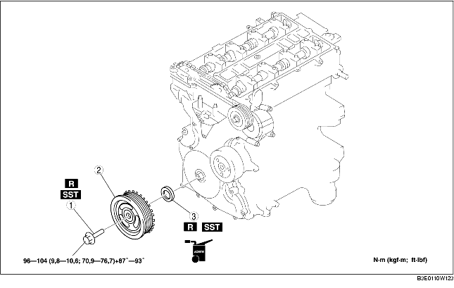

1. Quitar la placa de protección de los orificios de las bujías [Véase REMOCION/INSTALACION PLACA DE PROTECCION ORIFICIOS BUJIAS (LF)].
2. Quitar el soporte de la placa de protección de los orificio de las bujías.
3. Quitar la tapa de la batería [Véase REMOCION/INSTALACION BATERIA (LF)].
4. Desconectar el cable negativo de la batería.
5. Desconectar el cableado.
6. Quitar los siguientes componentes.
7. Quitar según el orden indicado en la tabla.
8. Instalar en el orden contrario al de la remoción.

.
1. Quitar el tapón ciego inferior del bloque motor.
2. Instalar la SST.
3. Girar el cigüeñal en el sentido de las agujas del reloj hasta que llegue a la posición PMS del cilindro N.1 (hasta que el contrapeso contacte la SST).
4. Mediante las SST mantener bloqueada la polea de cigüeñal.
1. Cortar el borde del sello de aceite mediante una navaja.
2. Quitar el sello de aceite mediante un destornillador envuelto en un trapo.
1. Aplicar aceite del motor limpio al borde del sello de aceite.
2. Empujar ligeramente en su alojamiento el sello de aceite manualmente.
3. Fijar el sello de aceite en la culata mediante la SST y un martillo.
1. Instalar la SST al eje de excéntricas como se muestra en la figura.
2. Instalar manualmente el perno fileteado M6 x 1,0.
3. Girar el cigüeñal en el sentido de las agujas del reloj hasta que llegue a la posición PMS del cilindro N.1 (hasta que el contrapeso contacte la SST).
4. Mediante las SST mantener bloqueada la polea de cigüeñal.
5. Apretar los pernos fileteados de la polea de cigüeñal en 2 pasos según el orden indicado utilizando la SST (49 D032 316).
6. Quitar el perno fileteado M6 x 1,0.
7. Quitar la SST del eje de excéntricas.
8. Quitar la SST del tapón ciego inferior del bloque motor.
9. Girar el cigüeñal en el sentido de las agujas del reloj de 2 vueltas hasta la posición PMS.
10. Instalar el tapón ciego inferior del bloque motor.